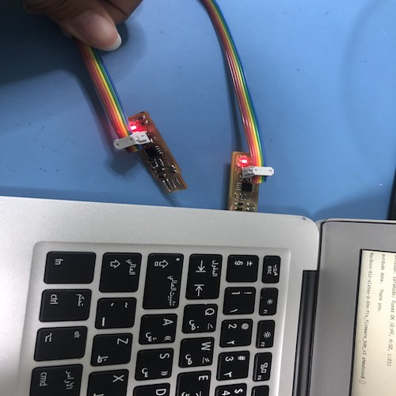
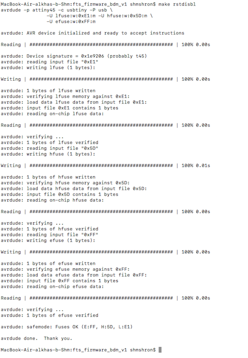
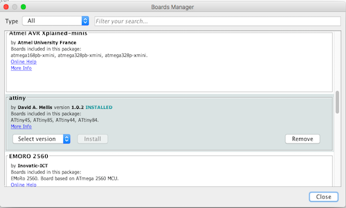

5. Electronics Production
# Goal:
Manufacture a milled printed circuit board (PCB) and program it.
# Tasks:
1- Manufacture a PCB called FabTinyISP using a Roland SRM-20 CNC machine.
2- Soldering the circuit parts to the FabTinyISP.
3- Program the FabTinyISP.
# Procedures:
a. Fabrication:
1- Download the board outline and the traces for FabTinyISP in PNG format from this link.
2- To change the format of the images, which are PNG, to Ronald mill (.rml) to allow the CNC machine to understand it, I used Fab Modules. Then, I specify PCB traces (1/64) for the traces image and PCB outline (1/32) for the outline image. Also, I select SRM-20 as the name of the machine. Please be aware that all zero points of the axis X, Y, and Z are at zero before the last step, which is calculation.This will produce the routes of the machine movement to produce the final board.

3- Moving to the Renold SMR-20 CNC machine. I started with placing an FR1-MDF board inside the machine and ensuring it was flat using the screws.
4- Before milling, ensure that you change the milling bit of the machine using a screwdriver. Use 1/64 milling bit for the traces and 1/32 for the outline.Then, select the origin point (X, Y, Z) based on the available space on the board and click on cut and add trace file to start milling.
This is the final result
b. Soldering:
1- Collect the 13 components of the circuit. I used double-sided tape to stick the components on paper to avoid losing them since they are tiny.
| Component | Quantity |
|---|---|
| ATtiny45 | 1 |
| 1kΩ Resistors | 2 |
| 499Ω Resistors | 2 |
| 49Ω Resistors | 2 |
| 3.3v Zener diodes | 2 |
| Red LED | 1 |
| Green LED | 1 |
| 100nF Capacitor | 1 |
| 2x3 pin header | 1 |
2- Start the soldering process by adding solder to PCB pads with one hand and try to move the circuit components by the other. Keep repeating this process for all the components.
3- To avoid having a short circuit, remove the excess solder and the copper on the edge with a scalpel. Also, check the ends of the components using a multimeter.
C. Programming:
1- Before starting the programming section, I installed CrossPack and Homebrew on my Mac.
2- Using Terminal, I typed the following five commands and waited for each one to terminate before typing the next:
-[ $ brew tap osx-cross/avr]
-[ $ brew install binutills]
-[ $ brew install gcc]
-[ $ brew tap osx-cross/avr && brew install avr-gcc]
-[ $ brew install avrdude]
3- Restart Terminal and check the following command to confirm that the software version matches my MacOS system [ $ avr-gcc --version]
Then, check if the command [ $ make -v] is working.
4- Upload the firmware source code from here as a folder named "fts_firmware_bdm_v1".
5- Open the folder using Terminal and [ $ cd ] command. Then, run [ $ make ] to create a hex file with the name "fts_firmware.hex" that will be used to program the ATtiny45.
6- Before programming the FabTinyISP, fix two 2x3 connectors at the ends of a ribbon cable using a hammer. Please notice that the order of the colors on both ends must have been the same.
7- To program my FabISP, I connected it to a previously programed ISP by the ribbon cable. Using Terminal, run the command [$ make flash] to program the flash memory.
8- Now check if the laptop identifies it by clicking on "About this Mac", then "System Report", then "USB".

In my first trial, my laptop did not recognize the ISP due to a short circuit in one of the resisters (R4), as shown below.
9- Run [$ make fuses] then [$ make rstdisbl].

10- To attempt to use my FabTinyISP, download Arduino IDE from this website and connect it to the ISP using the ribbon connecter.
11- To add support for the ATtiny, follow step 3 from this website

12- Click on Tools and change "Board", "Processor", and "Clock" as shown below.
13- Choose the programmer by clicking on Sketch then "Upload using programmer".
# Challenges:
I did face two main challenges. The first was during soldering, where I could not easily place the components and solder them, so I kept repeating this process. The second challenge was during the programming process, I kept following the steps given to me, but my laptop was continuously crashing, so I used my sister's laptop.